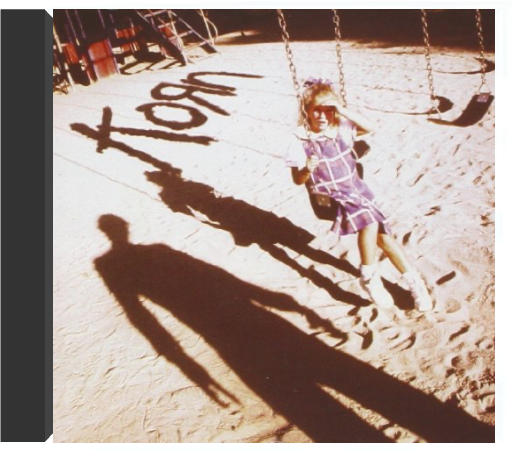
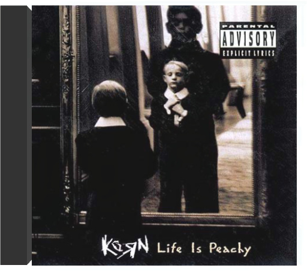

kill bill volumes 1 & 2kill bill kill bill volumes 1 & 2kill bill  Quentin Tarantino n'est pas seulement un cinéphile acharné devenu l'un des réalisateurs les plus talentueux de sa génération, propre à éclater les conventions du film noir avec Reservoir Dogs, Pulp Fiction puis Jackie Brown. C'est aussi un "metteur en musique" d'exception, à l'égal de Stanley Kubrick pour la musique classique. Son art se peaufinant au fur et à mesure de ses rares incursions derrière la caméra, le cinéaste turbulent cache un véritable orfèvre de la mise en scène, un génie visuel et narratif qui éclate littéralement dans Kill Bill, vol.1. Un film sensationnel de bout en bout, bourré de références qu'il s'approprie pour les éparpiller à la façon d'un puzzle en apparence foutraque mais en réalité proche de la perfection. kornkorn Mixture explosive de metal hardcore, d'indus, de grunge et de hip hop, la musique de Korn est une synthèse étonnante de toutes les tendances extrêmes du milieu des années 90. A la fois pesant et épileptique, baignant dans un flot de guitares distordues, truffé de brusques changements de rythmes et d'intensité, le néometal de Korn possède un pouvoir certain de fascination qui a vite propulsé le groupe vers le succès malgré son aspect anticommercial. La personnalité singulière des membres de ce combo américain et notamment de son chanteur flippé Jonathan Davis - tour à tour dépressif et furieux - y est également pour beaucoup. Ce premier album (le meilleur ?) contient déjà de nombreux moments forts ("Blind", "Clown", "Ball Tongue", "Faget"...) o๠révoltes, obsessions et frustrations sont expulsées avec une rage peu commune et un humour noir particulièrement grinçant. Du metal radicalement thérapeutique. — James Petit life is peachykorn Déjà auteur d'un premier album violent et remarqué en 1994, Korn n'a cessé de tourner pendant deux ans avant de réaliser l'incendiaire Life Is Peachy. Le monde entier a alors craqué pour le metal novateur et plein d'agressivité de ces Californiens. Aussi dynamique qu'un Rage Against The Machine, Korn joue sur des côtés plus torturés dus au caractère déjanté de son chanteur Jonathan Davis, qui alterne rage folle et relative sérénité. Le vigoureux "Adidas", premier tube de Korn, et le flamboyant "Twist" ne donnent qu'un avant- goût pimenté d'un disque très, très relevé. Une oeuvre radicale qui a depuis fait des adeptes. —Cyril Deluermoz |


 Made with Delicious Library
Made with Delicious LibraryNancy, State zipflap congrotus delicious library Thomas, Julien